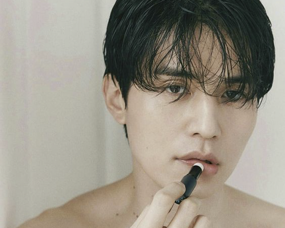
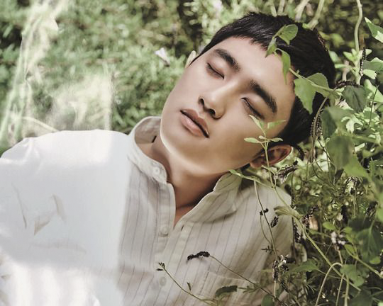
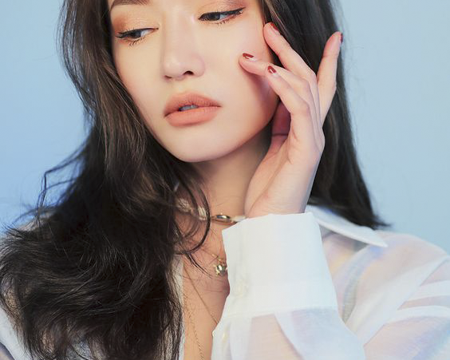
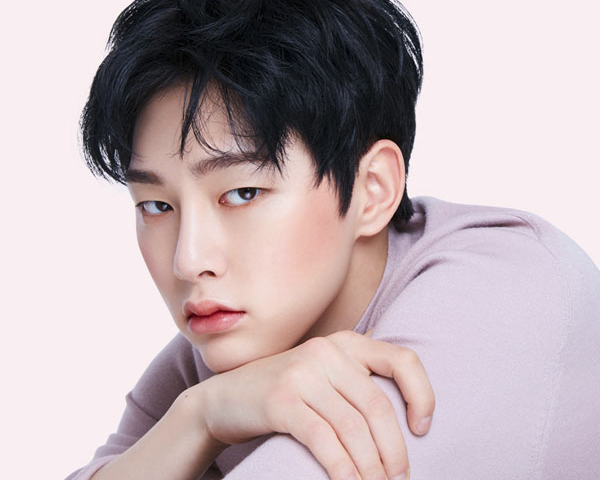
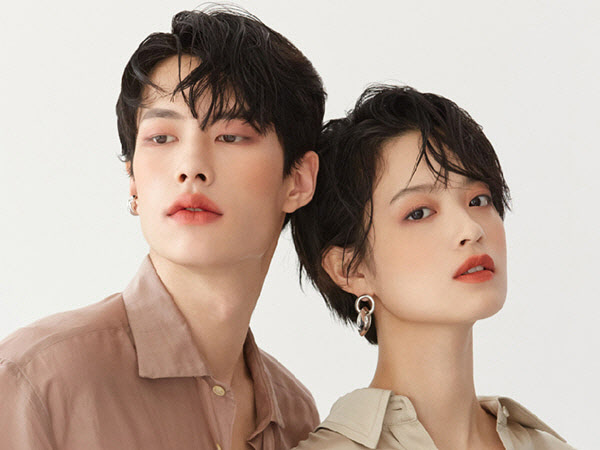

성별의 구분이 유독 엄격했던 뷰티, 특히 색조 화장품의 경계가 옅어지고 있다. 최근 유행하는 '젠더리스'의 바람은 단순히 '옴므'나 '남성 전용'이라는 수식어 없이 다양한 색조 화장품이 출시되게 하며, 남성들이 메이크업을 하는 것에 대한 두려움이나 거부감까지 낮추고 있다. 이를 통해 색조 화장품 뿐만 아니라 메이크업의 굳건했던 관성은 조금씩 허물어지고 있는 것이다.
한 뷰티업계 관계자는 “실제로 10대 후반에서 20대 남성들은 메이크업에 대한 거부감이 낮다. 이는 화장하는 남성 아이돌이나 유튜브 스타의 영향이 있는 것으로 보인다. 실제로 젊은 세대는 메이크업 자체에 대해 남녀 구분 없이 자기관리로 인식하는 경향이 있다”고 말했다.

외모에 대한 관심이 늘며 덩달아 뷰티 관련 시장이 급속도로 팽창하고 있다. 특히 최근 들어 ‘그루밍족’(패션과 미용 등 외모 관리에 아낌없이 투자하는 남자들)이 빠르게 늘며 남성 고객이 뷰티시장의 핵심 수요층으로 떠올랐다.

사실 뷰티 업계에서는 과거에도 남자 모델을 발탁하곤 했다. 지난 2013년, 네이처리퍼블릭이 인기 보이그룹 엑소를 발탁하는가 하면 더샘에서는 세븐틴을, VT코스메틱에서는 방탄소년단을 업계의 뮤즈로 발탁하는 등 화장품 모델로서 활약하는 경우가 다수 존재했다.

하지만 이는 단지 마케팅에 불과했다는 분석이다. 남성 모델에게는 기초화장품을, 아이섀도우나 립스틱 등 색조 메이크업에는 여성 모델들 따로 기용하거나 사진을 찍는 등의 성 고정관념의 연속이었다. 결국 이는 여성 팬들을 확보하기 위한 전략이었으며, 단순히 보이 그룹의 이름만을 이용한 홍보 방식 중 하나였던 것이다.

그러던 와중 2017년, 뷰티 브랜드’릴리바이레드’는 ’프로듀스 101시즌2’로 이름을 알린 권현빈을 모델로 기용했으며, 특유의 과즙미 넘치는 색조를 남성 모델인 권현빈에게도 사용해 화보를 찍었다. 빨갛게 두 볼과 입술을 물들인 남성 모델은 낯선 배력을 느끼게 해 줌과 동시에 “찰떡이다”라는 반응까지도 이끌어냈다. 남성 모델을 사용한 것은 홍보 효과와 더불어 일반 여성들의 소비 욕구를 들게 만들었다. 최근에는 보민이 모델로 발탁되어 활동중이다.

2018년 5월, 뷰티 브랜드 ‘라카’는 더욱 과감한 행보를 보였다. 메이크업에 대한 오랜 관성을 깬다는 목표를 갖고 탄생한 젠더 뉴트럴 메이크업 브랜드 라카는 남성용, 혹은 여성용 등 이분법적 사고에 국한되지 않고 모든 제품들을 여성과 남성 모두를 위한 메이크업이 가능하도록 한것이다. 런칭 시작부터 12가지 다양한 컬러의 남녀공용 립스틱을 선보인 라카는 성별에 구애받지 않고 자신에게 어울리는 색을 선택할 수 있다는 점을 내세웠다.